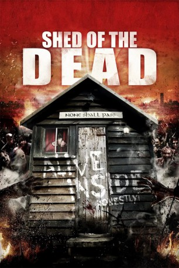
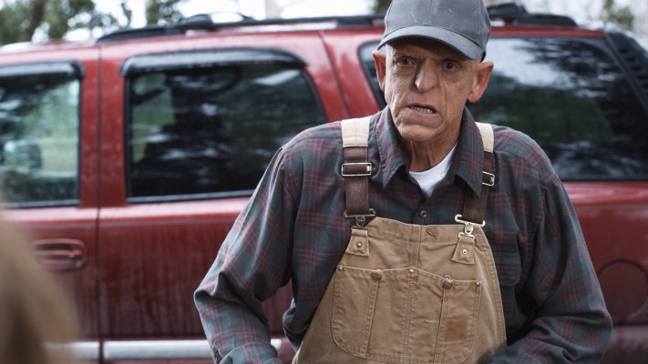

#11230 Shed of the Dead
 
 IMDB-Wertung: 6.8 / 10
IMDB-Wertung: 6.8 / 10  Metascore: 0
Metascore: 0 
Trevor ist arbeitslos – beziehungsweise er "befindet sich zwischen zwei Jobs", wie er selbst sagt. Seine Tage verbringt er in seiner Schrebergarten-Hütte, um erstens seiner Frau aus dem Weg zu gehen und zweitens Tabletop-Figuren zu bemalen, mit denen er anschließend epische Schlachten gegen seinen Kumpel Graham ausficht. Doch Mr. Parsons dem ebenfalls ein Grundstück in dem Schrebergarten gehört, will den faulen Hänger vertreibe und startet eine Petition. Es kommt zur Konfrontation zwischen den beiden und plötzlich steht Trevor mit einer Leiche da, die es zu verstecken gilt.
Jahr: 2019
Dauer: 85 Minuten
FSK: 18
Land: England Studio: Meteor FilmTonspuren: DTS - ,
Untertitel: Deutsch,
Auflösung: 1080p (1920x800) Größe: 5806 MB
Genre: Horror, Komödie
Regisseur: Drew Cullingham
Drehbuch: Drew Cullingham
Soundtrack: Reinhard Besser
Darsteller:
- Spencer Brown als Trevor
- Lauren Socha als Bobbi
- Ewen MacIntosh als Graham
- Emily Booth als Harriet
 Kane Hodder als Mr. Parsons
Kane Hodder als Mr. Parsons Bill Moseley als Doc
Bill Moseley als Doc-  Michael Berryman als Derek
 Brian Blessed als Narrator
Brian Blessed als Narrator- James Fisher als Peter
- Frank Jakeman als Ted
 Julian Nest als Birch
Julian Nest als Birch- Evie Scott als Zombie Bride
- Colin Murtagh als Biker Zombie
- Jamie Long als Paramedic Joe
- Filiz Fairweather als Zombie
- Penny Judd als Zombie
- Clare Lean als Irene
- Antony D. Lane als Greg
- Finbarr Delaney als Matty
- Warren Speed als Pervo The Clown
Datei: X:\FSK18-2019\Shed of the Dead (2019, FSK18, 1920x800).mkv seit 24.05.2019
Festplatte: FSK18
 Es gibt insgesamt 10 Filme in der Gruppe 'FSK18-2019'
Es gibt insgesamt 10 Filme in der Gruppe 'FSK18-2019'